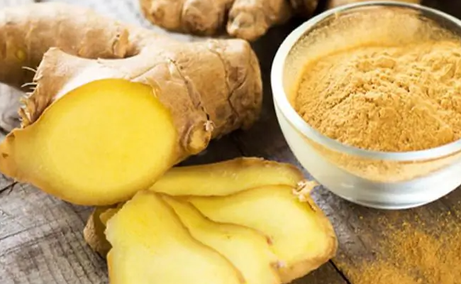

Kamilla
A kamilla az egyik legismertebb gyógynövény, amelyet főként gyulladáscsökkentő és nyugtató hatása miatt használnak. Teája segíthet emésztési panaszok, megfázás vagy stressz esetén, valamint külsőleg alkalmazva bőrgyulladások és sebek kezelésére is jó.

Gyömbér
A gyömbér erős gyulladáscsökkentő és antioxidáns tulajdonságokkal bír. Kiváló hányinger ellen, legyen szó utazási rosszullétről vagy emésztési problémákról. Emellett támogatja a vérkeringést és segíthet megfázás esetén is. Frissen, szárítva vagy teaként fogyasztható.
Levendula
A levendula legismertebb nyugtató és alvást segítő hatásáról. Illóolaja csökkentheti a szorongást, fejfájást és segíthet az elalvásban. Teaként is fogyasztható, de fürdővízbe vagy aromaterápiás diffúzorba téve is hatékony.

Csalán
A csalán erős méregtelenítő és vízhajtó gyógynövény, amely támogatja a veseműködést és segít a szervezet salaktalanításában. Gazdag vasban, így vérszegénység esetén is hasznos lehet. Teaként fogyasztva allergiák és ízületi problémák enyhítésére is ajánlott.